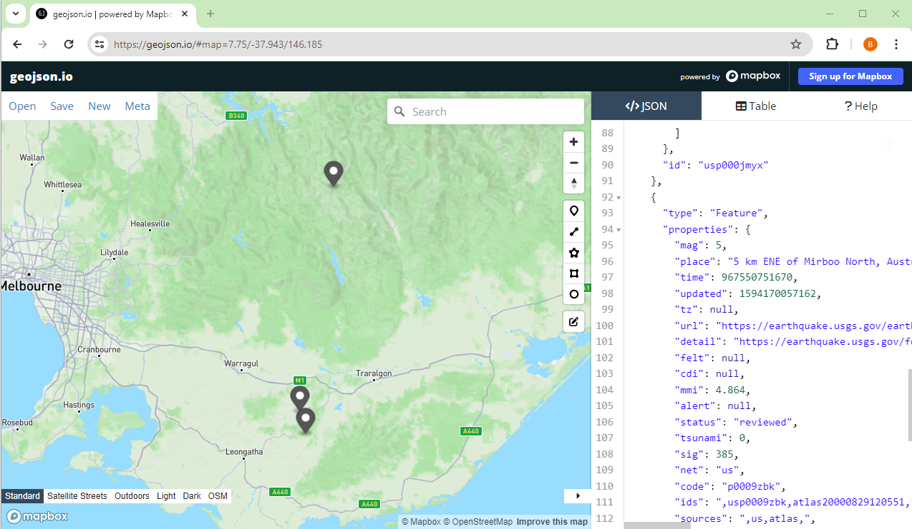

Querying APIs with LLMs
Overview
Teaching: 30 min
Exercises: 40 minQuestions
How can LLMs be used to work with APIs
What approaches are useful in prompting LLMs to help?
Objectives
Understand how APIs can be invoked using LLMs
Develop skills in quickly analysing and applying documentation with LLMs
LLMs for working with APIs
In science we often want to query application programming interfaces or APIs to get data, and sometimes to analyze it. In this context APIs are typically web services. Often when calling a web service API there are a range of concerns you need to take into account. Many services require Authentication, which is proves to the service that your are authorized to use it. APIs are often accessed through one or more URL paths, sometimes parts of the path are used to carry information you want to send to the API. URL parameters, things after a url path normally beginning with a ‘?’, are also used to provide information to the API.
Most APIs are documented and this is very useful for building specific calls to the API.
Different APIs typically expect different parameters and, while there are often patterns or commonalities between APIs, typically there you’ll need to refer to documentation to use an API effectively.
Reading and adapting documentation with LLMs
LLMs are very useful in working with APIs. This is because an LLM can read API documentation for you and summarize it picking out relevant information. Furthermore LLMs can be prompted to read API documentation and, from that, build a specific query matching your natural language request. At best this means that you don’t need to understand an API in much detail to use it. This can save a lot of time and cognitive effort.
Example: Querying earthquake data from the USGS web service
The website https://github.com/public-apis/public-apis?tab=readme-ov-file#science–math has a great list of APIs we can use to learn how to work with APIs and LLMs
One of those listed is https://earthquake.usgs.gov/fdsnws/event/1/ an usgs API for earthquake information. Lets say we want to get a list of earth quakes larger than 5 on the richter scale in Australia.
Including documentation in LLM prompts
The documentation looks complex. Having been trained on large portion of the internet LLMs like GPT4 may well have information on this API. However as the API documentation is reasonably short we can use it directly as part of our prompt. This is a very important technique when prompting LLMs. Often it is useful to paste in large amounts of context information in addition to your specific question.
In this case we can paste as the first part of our prompt the entirety of the documentation page https://earthquake.usgs.gov/fdsnws/event/1/. Then we can follow up by asking the LLM what to tell us more about the API. In this conversation, the LLM gives very specific details initially and then is further prompted to give more general information, https://chatgpt.com/share/603c97b5-698b-4ef3-b5ae-8b77936d441b.
Using the LLM to build an API call
We can try a very specific question “Build a query to find, what earthquakes larger than magnitude 5 on the richter scale have occured in Victoria in the past 50 years?”. To ask we paste in the documentation again in a fresh conversation and include this question at the end.
ChatGPT4 gives an promising result https://chatgpt.com/share/98526278-939a-4c9e-a60c-de44f20041c1. It suggests “https://earthquake.usgs.gov/fdsnws/event/1/query?format=geojson&starttime=1974-05-26&endtime=2024-05-26&minmagnitude=5&minlatitude=-39.2&maxlatitude=-33.9&minlongitude=140.9&maxlongitude=150” and also provides an explaination of each aspect of the query.
Understanding the query
As we can see from the resulting query it’s likely to have encapsulated many aspects of the question correctly, the date times look around the right values, and a quick check on a map indeed shows that geographic ranges are likely correct for a bounding box of victoria.
Using the Query
Pasting that query into a web browser gives a short json document as a response. It’s not very readable. Querying the LLM again it suggests that geojson.io might be a suitable website for visualising this data.
{alt=’map of earthquakes in australia’}
Exploring the data
Exploring the data a bit we can see 3 candidate earthquakes and clicking on the provides some data. Each is timestamped but it is unclear what the format is. Let’s paste a record into ChatGPT and see what it can decipher.
Fixing the time
The conversation, https://chatgpt.com/share/f0decf2e-8b80-4ea2-af76-5b18489ab338 tells us that the time is in ‘seconds since epoch’ and following up provides a direct conversion. ChatGPT includes a capability to perform calculations. This is not a native LLM capability, rather ChatGPT integrates a python enivornment, the LLM generates code and the python enviornment executes it and the LLM interprets the results. We could have manually perform this workflow with the LLM by asking it to generate code to convert epoch time to human readdable time and executed this in a python enviornment ourselves.
Testing the outputs
One very important aspect of using LLMs is ensuring that they give us the correct results. This example is ideal because the LLM has provided us with a very small number of results. Likely these events would’ve been news worthy. We can check the LLM hasn’t given us any false positives by searching for news reports corresponds to the records. Doing this with one record gives us Mansfield Earthquake. At least one of the responses from the API queried using ChatGPT has been verified.
In this case it would be more difficult to determine that the LLM hadn’t missed any events. Nevertheless we have much higher confidence that the query is correct because we can see that it has returned at least one correct answer fullfilling at least some of our criteria. As the query is simple further confidence can be gained by careful consideration of the query parameters and a review of the USGS documentation. LLMs can also be employed to help suggest testing strategies and review.
Try a different query
Using the USGS API endpoint and the techniques described execute a new query and verify it.
Try another API
Try another api listed at https://github.com/public-apis/public-apis?tab=readme-ov-file#science–math
Note
GPT-4 was used to fix minor mistakes
Key Points
LLMs can be very direct path to building API queries
Testing and understanding are essential